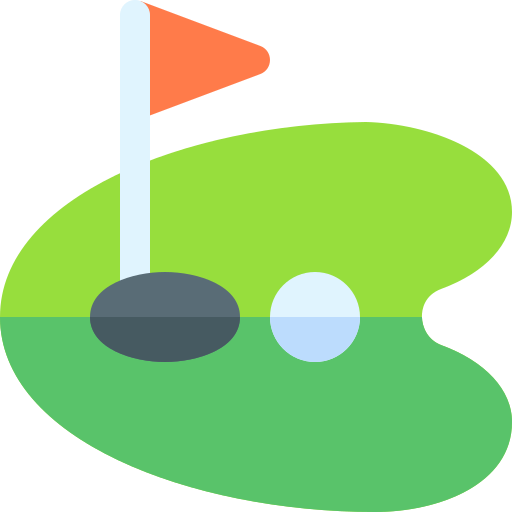
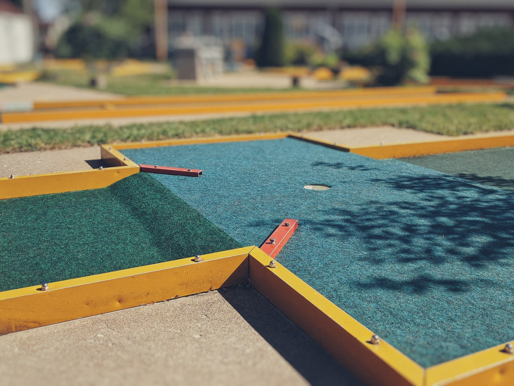
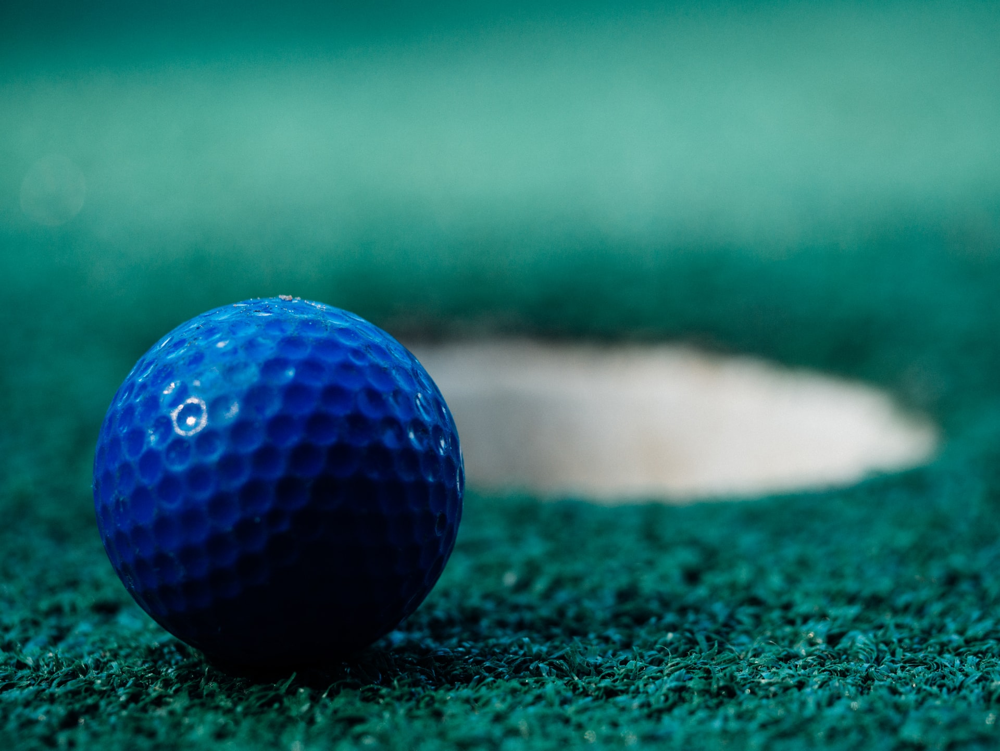
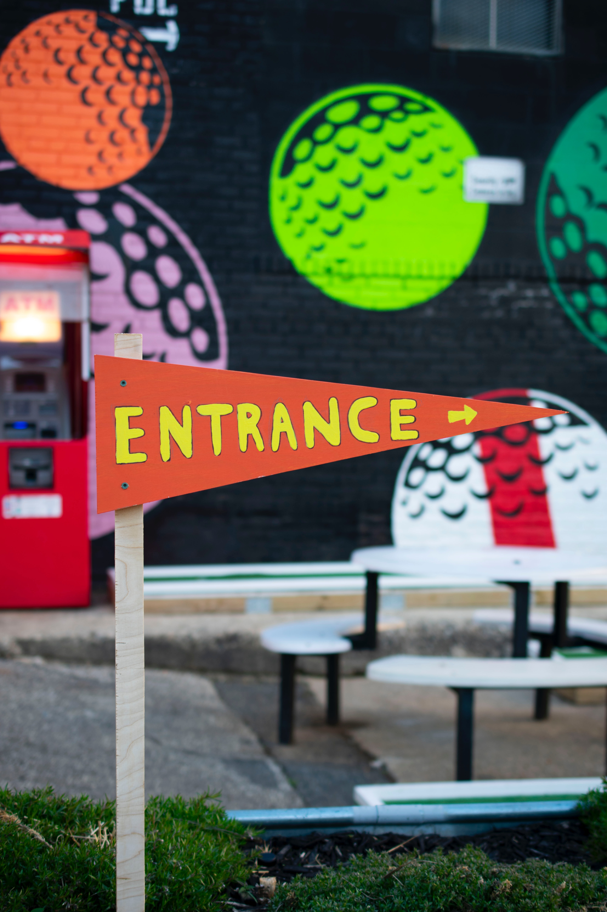

Welcome to Sunnydale Mini Golf!
Miniature golf, also known as minigolf, mini-putt, goofy golf, crazy golf, or putt-putt, is an offshoot of the sport of golf focusing solely on the putting aspect of its parent game. The aim of the game is to score the lowest number of points. It is played on courses consisting of a series of holes similar to its parent, but characterized by their short length . The game uses artificial putting surfaces, a geometric layout often requiring non-traditional putting lines such as bank shots, and artificial obstacles such as tunnels, tubes, ramps, moving obstacles such as windmills, and walls of concrete, metal, or fiberglass.
Sunnydale Media
One of the first documented minigolf courses in mainland Europe was built in 1926 by Fr. Schröder in Hamburg, Germany. Mr. Schröder had been inspired by his visit to the United States, where he had seen minigolf courses spreading across the country.
 Learn More...Sunnydale gallery
The earliest documented minigolf competitions were played in the United States. The first National Tom Thumb Open minigolf tournament was arranged in 1930, with a total cash purse $10,000 . Qualification play-offs were played in all of the 48 states, and the final competition on Lookout Mountain, Chattanooga, Tennessee, attracted over 200 players representing thirty states.
 Learn More...Sunnydale Blog
In 1938 Joseph and Robert Taylor from Binghamton, New York, started building and operating their own miniature golf courses. These courses differed from the ones in the late 20s and early 30s; they were no longer just rolls, banks, and curves, with an occasional pipe thrown in. Their courses not only had landscaping, but also obstacles, including windmills, castles, and wishing wells.
 Learn More...